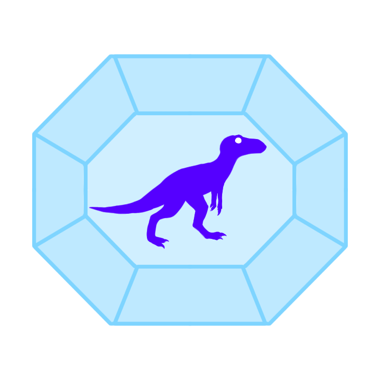

Prehistoric Yakutia
Back

Sensational find
In the summer of 2019, the Summer Expeditionary School "Ellayaada" of the Oya Secondary School of Khangalassky Ulus together with the Minor Academy of Sciences of the RS(Ya) conducted a number of search works. One find of young palaeontologists is recognised as a unique exhibit by scientists of St. Petersburg State University. It's the vertebra of the plesiosaur! The find was made in the area of Tabaginsky Cape. The expedition was headed by Deputy Director for Scientific Work of the Oya Secondary School named after A.V. Dmitrieva, local historian-enthusiast Prokopy Nogovitsyn.